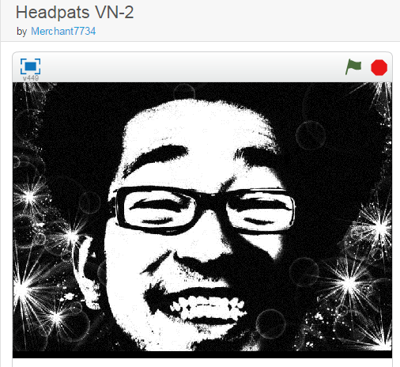

Using the Scratch website, I was able to complete this CSE activity! The goal of this activity was to familiarize beginners such as I with Scratch interface. Click on the image to view it!
I made another project using the scratch website. It is based on the 'game' theme. Click on the image to view it!"
BACKLOGI made another project using the scratch website. It is based on the 'game' theme. Click on the image to view it!"
BACKLOG